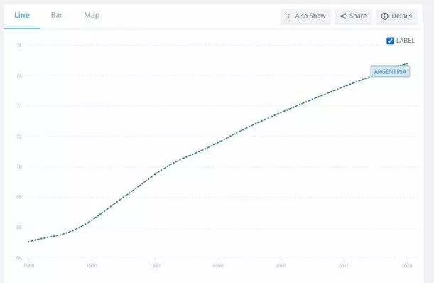

Population of Argentina
In the 2010 census [INDEC], Argentina had a population of 40,117,096 inhabitants, and preliminary results from the 2022 census [INDEC] counted 47,327,407.
Population 44,361,150
Growth rate 0.35% (2020 est.)
Birth rate 11.8 births/1,000 population (2020)
Death rate 8.3 deaths/1,000 population (2020)
Life expectancy 78.07 years
• male 74.97 years
• female 81.36 years (2021 est.)
Fertility rate 1.54 children born/woman (2020)
Infant mortality rate 8.4 deaths/1,000 live births (2020)
Life expectancy at birth, total (years) - Argentina
( 1 ) United Nations Population Division. World Population Prospects: 2019 Revision, or derived from male and female life expectancy at birth from sources such as: ( 2 ) Census reports and other statistical publications from national statistical offices, ( 3 ) Eurostat: Demographic Statistics, ( 4 ) United Nations Statistical Division. Population and Vital Statistics Reprot ( various years ), ( 5 ) U.S. Census Bureau: International Database, and ( 6 ) Secretariat of the Pacific Community: Statistics and Demography Programme.
Argentina Urban population
Urban population refers to people living in urban areas as defined
by national statistical offices. It is calculated using World Bank
population estimates and urban ratios from the United Nations World
Urbanization Prospects. Aggregation of urban and rural population
may not add up to total population because of different country
coverages.
Argentina urban population for 2020 was 41,796,990, a 1.11% increase
from 2019. Argentina urban population for 2019 was 41,339,571, a
1.13% increase from 2018.
Argentina urban population for 2018 was 40,877,099, a 1.15% increase
from 2017.
Argentina urban population for 2017 was 40,410,674, a 1.18% increase
from 2016.
Argentine cuisine
Argentine cuisine is described as a cultural blending of Mediterranean influences brought by the Spanish during the colonial period and, later, by Italian and Spanish immigrants to Argentina during 19th and 20th centuries, with influences from a further cultural blending of criollos (due to Spanish colonizers) with the Indigenous peoples of Argentina (such as mate and humitas). Argentine annual consumption of beef has averaged 100 kg (220 lbs) per capita, approaching 180 kg (396 lbs) per capita during the 19th century; consumption averaged 67.7 kg (149 lbs) in 2007.

Education
Argentina 's education system is made up of four levels: initial , primary , secondary , and higher . Argentine education is governed by the National Education Law 26,206 which establishes that education is a public good, a personal and social right of people, of which the State is the one who must guarantee it. It also determines that it is mandatory between the ages of four and 17 or 18. The National Education Law No. 26,206 establishes that the country allocates 6% of its GDP to education, an index in line with other countries in the region but well below developed countries.
Number of Visits to Page:
Days since last visit:
El Calafate
Cafayate (Spanish pronunciation: [kafaˈʒate]) is a town located at the central zone of the Valles Calchaquíes in the province of Salta, Argentina. It sits 1,683 metres (5,522 ft) above mean sea level, at a distance of 189 kilometres (117 mi) from Salta City and 1,329 kilometres (826 mi) from Buenos Aires. It has about 12,000 inhabitants (2001 census [INDEC]).
Congress
The Congress of the Argentine Nation (Spanish: Congreso de la Nación Argentina) is the legislative branch of the government of Argentina. Its composition is bicameral, constituted by a 72-seat Senate and a 257-seat Chamber of Deputies.
El Chalten
El Chaltén is a small mountain village in Santa Cruz Province, Argentina. It is located on the riverside of Rio de las Vueltas, within the Los Glaciares National Park (section Reserva Nacional Zona Viedma) near the base of Cerro Torre and Cerro Fitz Roy spires, both popular for climbing. It is 220 km north of El Calafate.
Iguazú Falls
Iguazú Falls or Iguaçu Falls (Guarani: Chororõ Yguasu [ɕoɾo'ɾõ ɨɣʷa'su], Spanish: Cataratas del Iguazú [kataˈɾataz ðel iɣwaˈsu]; are waterfalls of the Iguazu River on the border of the Argentine province of Misiones and the Brazilian state of Paraná.
Obelisco
The Obelisco de Buenos Aires (Obelisk of Buenos Aires) is a national historic monument and icon of Buenos Aires. Located in the Plaza de la República in the intersection of avenues Corrientes and 9 de Julio, it was erected in 1936 to commemorate the quadricentennial of the first foundation of the city.
Perito Moreno Glacier
The Perito Moreno Glacier (Spanish: Glaciar Perito Moreno) is a glacier located in Los Glaciares National Park in southwest Santa Cruz Province, Argentina. It is one of the most important tourist attractions in the Argentine Patagonia.